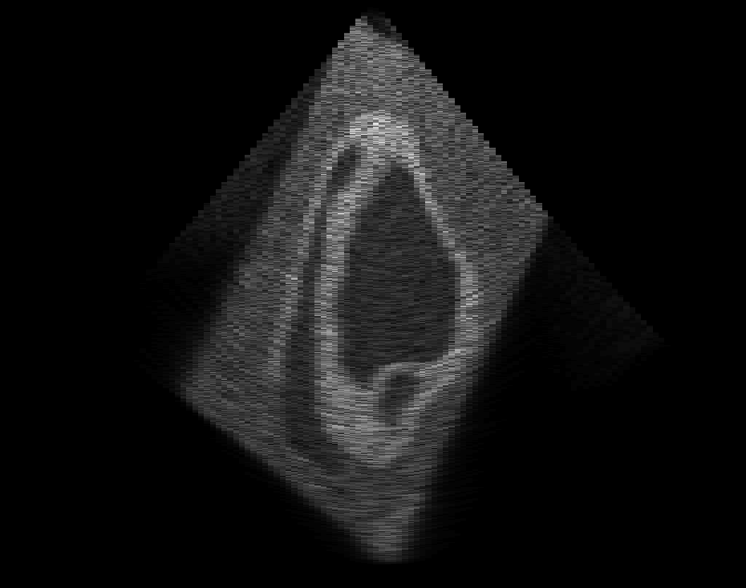
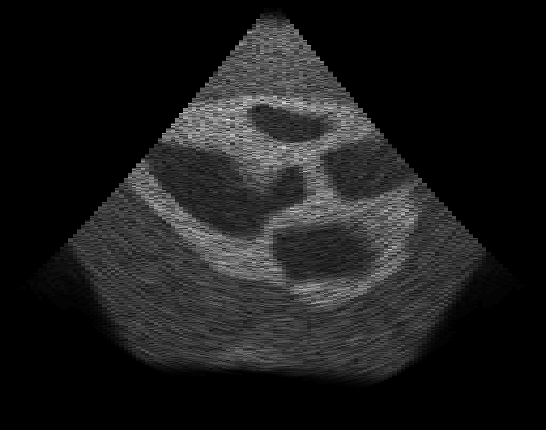
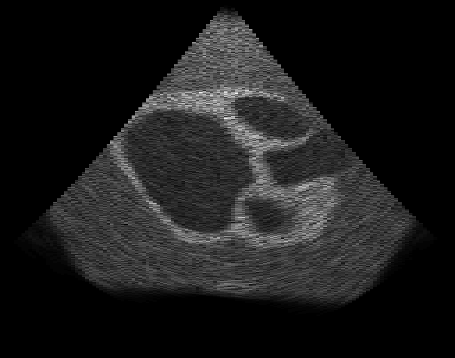
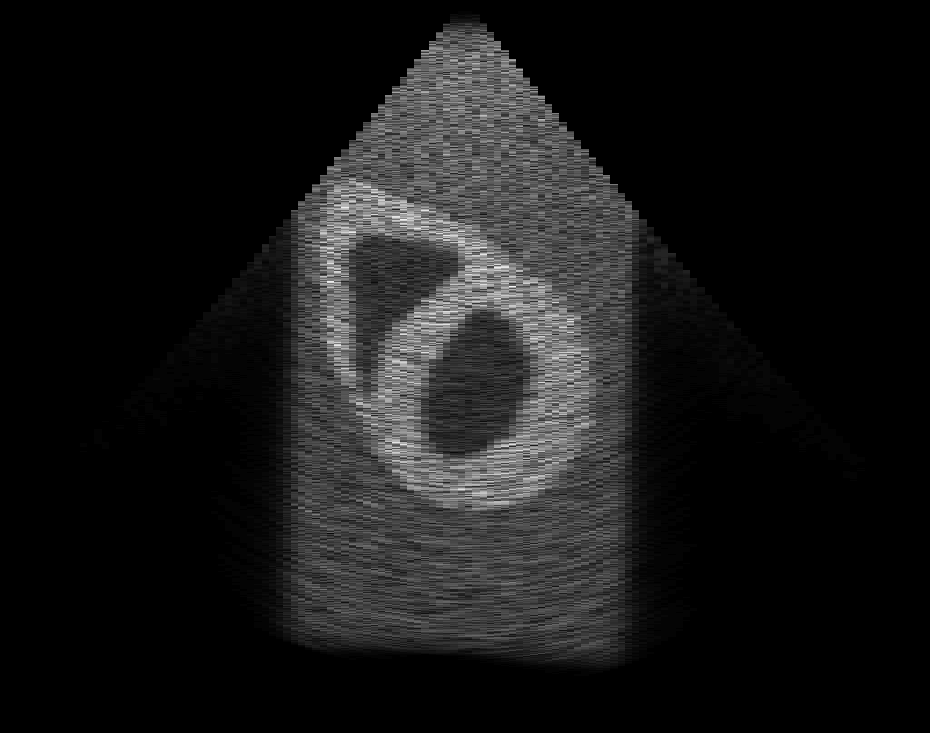

Gallery > Ultrasound
Simulations of the ADAM model
Apical 4 chamber view.

Apical 2 chamber view: end of systole (left), end of diastole (right)
 |
 |
Parasternal long axis view: end of systole (left), end of diastole (right)
|  |
 |
Parasternal short axis view: end of systole (left), end of diastole (right)
|  |
 |